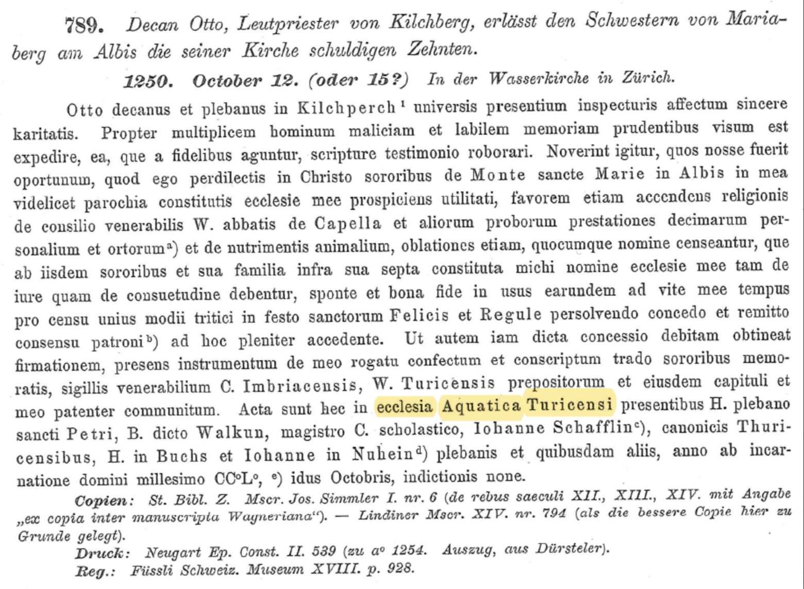

Die Wasserkirche wurde ums Jahr 1000 auf einer Insel inmitten der Limmat erbaut.(Abb.1) Laut einer Legende wurden auf dieser Insel die späteren Zürcher Stadtheiligen Felix und Regula enthauptet. Deshalb ist noch heute der zentrale Kulturort ihr angeblicher Hinrichtungsstein, welcher sich in der Krypta befindet. Doch erstmals urkundlich erwähnt wurde die Wasserkirche in einer lateinischen Urkunde (Abb.4) 1250 als «ecclesia aquantia turicensi (Wasserkirche Zürich)». Der deutsche Name «wazzirkilcha» erschien erst 1256 in einer anderen Urkunde. Eine These besagt, dass die Gerichtsstätte vor der Kirche, das sogenannte Stangen- oder Volksgericht, darauf hinweise, dass die Wasserkirche ursprünglich die Taufkirche des Grossmünsters war. Im 13. Jahrhundert wurde die romanische Wasserkirche im gotischen Stil umgebaut. Vom romanischen Vorgängerbau sind nur wenige Reste erhalten. Bereits 1477 entschied der Stadtrat von Zürich die Wasserkirche abzureissen und in einem neuen prunkvolleren Stil wieder aufzubauen. Unter dem Baumeister Hans Felder entstand der heutige spätgotische Bau, der um 1486 geweiht wurde. Die Innenräume wurden mit kostbaren Wandmalereien und Verzierungen ausgestattet, die nur als Fragmente erhalten sind. Beim Bau wurde eine schwefelhaltige Quelle entdeckt, welcher Heilkräfte zugeschrieben wurde. Als «Gesundbrunnen» diente die Quelle danach den Pilgern zur Heilung von Krankheiten und Beschwerden. 1524 wurde Zürich durch Huldrych Zwingli (* 1. Januar 1484 in Wildhaus; † 11. Oktober 1531 in Kappel am Albis) reformiert und alle Bilder, Altäre und die Orgel wurde aus der Wasserkirche entfernt. Auch die Heilquelle wurde zugeschüttet. Das Gebäude diente dann als Lagerhaus (Abb.2) und es wurden deshalb zwei Zwischenböden eingefügt. So wurden die langen, hohen Spitzbogenfenster zu zwei kleineren Fenstern umgebaut. Da das kühle Flusswasser nah an den Wänden der Kirche vorbeifloss, funktionierte dies wie ein Kühlschrank und war ideal zum Lagern von beispielsweise Kartoffeln. 1634 wurde das Gebäude erneut umgebaut und wurde zur «Gemeinen Bürger-Bücherei». Dies war die erste Stadtbibliothek von Zürich.(Abb.3) 1717 liess der Stadtrat die Zwischenböden aufbrechen und das Innere mit einer barocken hölzernen Galerie versehen. Damit wurde die Höhenwirkung des Gebäudes wiederhergestellt. 1791 wurde die Heilquelle erneut gefunden. 1839 wurde beim Neubau des Limmatquais der Wassergraben zwischen Stadt und der Insel, auf der die Wasserkirche steht, zugeschüttet. 1917 zog die Stadtbibliothek aus der Wasserkirche aus und zog stattdessen ins neuerbaute Gebäude am Zähringerplatz. 1928 bis 1940 wurde die Wasserkirche nach langem Streit gründlich renoviert, wobei man versuchte, den ursprünglichen Zustand wiederherzustellen. Die ursprüngliche Fenstereinteilung wurde rekonstruiert, die Zwischenböden entfernt und das nördlich angebaute sogenannte «Wasserhaus» abgerissen. Dabei wurden die barocken Holzgalerien der Bibliothek zerstört. Drei Fenster des Chors wurden von Augusto Giacometti gestaltet. Es wurde auch eine neue Orgel eingebaut. Seither wird das Gebäude wieder als evangelisch-reformierte Kirche benutzt.

Abb. 1 Die Wasserkirche um 1500.
Ausschnitt aus dem Altarbild
von Hans Leu dem Alteren
Abb. 2 Die Wasserkirche als Lagerhaus

Abb. 3 Wasserkirche als Bibliothek
 Abb. 4: Kopie der Lateinischen Urkunde
aus dem Stadtarchiv Zürich